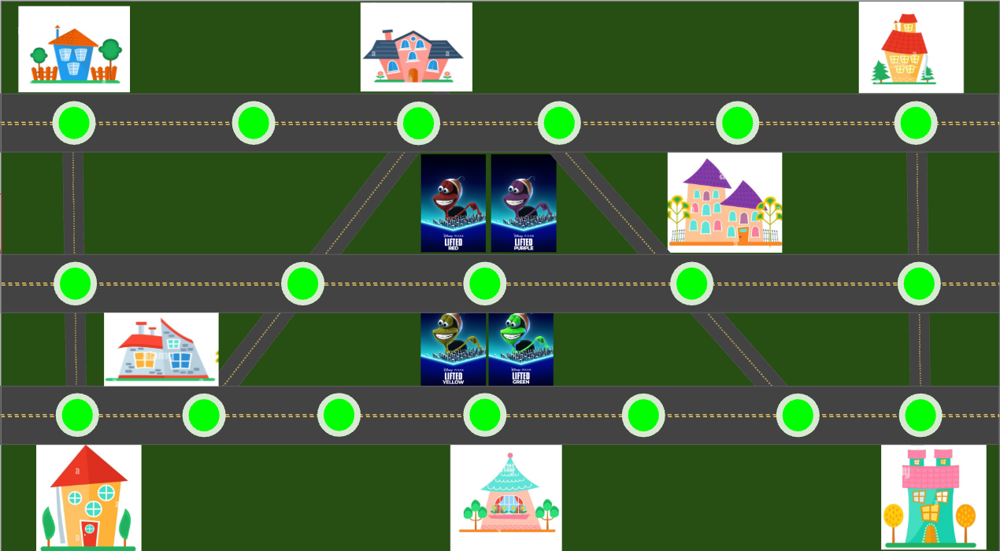
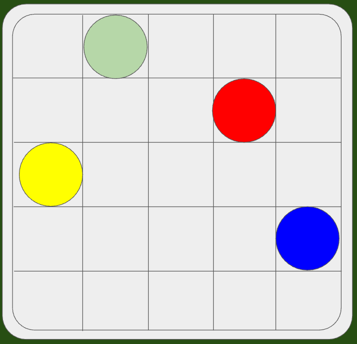
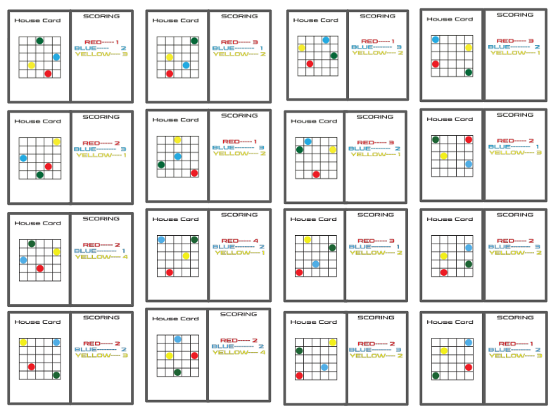

- Goal: Design a board game based around feastures of the short film "Lifted" by Pixar
- Added multiple houses to the board to expand upon the original short film and to make it a multiplayer experience
- Designed unique grid system for each of the houses with people to abduct

Welcome to Lifted! In this game, players invade a small neighborhood, abducting people from their homes! Your main goal is to abduct as many people from neighborhood as possible! During your turn, you can do three actions: move, pick up an ability card, or use an ability card. You are able to do three of these actions per turn, even doing mulitple of the same action during one turn. Using the ability cars can turn the tide of a game so be sure to collect them! You then can land on a house space to abduct humans. When you enter a house to abduct people, you pick up a house card, which has a grid with colored dot on it. Roll a die to move on the grid, and once you are finished abducting people in the house, you are able to flip the card over to see how many points you get!
The game design team consisted of three people: Jacob Hudson, Trevor McMahon, and Jaylyn Jennings. We wanted to create a game that expanded on the universe of the original game. We were able to do this despite the contrainst that were given to us. The main constraints on the projects were that we had to design a board game based around the short film "Lifted" and we could not use dice as the primary way of moving around the board. Due to the short film being primiarily focused on one character, while another character observes, we decided to expand our game to be a multiplayer experience, and expanding that by adding multiple houses for players to enter. We changed movement to choices you make on the board, that can be boosted by certain ability cards, as we felt that it gave players a unique sense of skill expression. The primary tool we used to create the unique experience was thinking of ways we could make the game as chaotic as possible, similar to the short. We added ability cards that can have drastic effects on the game. We made gameplay fast-paced by making the board easily manuverable.

We interpreted the prompt to make a board game that takes inspiration from the main points of the short film "Lifted" while also creating a fun board game for multiple players. We did this by expanding the game from just one alien abducting one person from one house, to multiple aliens adbucting multiple people in a neighborhood.
We were inspired by a few elements of the film that ultimately defined our mechanics. The grid system attachd to the house cards was inspired by the movement of the person being adbudcted by the tractor beam, with the person moving through the house to be taken out. Another big piece of the film that we wanted to represent fatihfully in our game were the switches, which we brought to life with the ability cards. Since the alien in the short film had no idea what the switches did, we translated that into randomness with a card system. The ability cards, add a unique feeling of chaos to the board game.
One challenge that we ran into was deciding on a concrete idea for the grid system. The team could no decide if we wanted to add obsticles into the house, how many people we wanted, or how movement exactly works. We eventually decided by each of us pitching our own idea, then taking bits from everyone's version.
We hosted several playtesting sessions, with groups of 2-3 players. Some of the groups had the rules explained to them, while others we had them read the rules on their own. These playtests allowed us to test different board shapes. The first two playtests focused on our original prototype board, which is shown at the top, while the later two focused on a newer board shape. These playtests allowed us to figure out what worked with our board shapes, and what didn't. One example was that we decided to add more connecting paths on our second board, which allowed players to navigate around more easily.
Not much changed in between playtests. The main change was the board shape, which was changed to be much more unique to navigate. We also decided to remove pedestrians that players could abduct along the way, as they were difficult to distribute randomly around the board, and players felt that they did not have a significant impact on gameplay.

If I were to make on change to our Lifted board game, it would be to overhaul the grid system to make it truly unique. As you would move through the house, you would leave behind a trail, signifying that your movement is actually a tractor beam. You would not be able to cross onto the same grid spot, forcing players to be more strategic about their movements.
This change would address some of the comments received during the playtests. While players found the grid system interesting, players felt there were little to no risk or strategy when abducting humans from the house, unless they were at risk of another player entering the house or a player using a crush house card. This requires players to be more careful when planning their routes through the house, as they could limit themselves from abducting a person after they have been cut off.